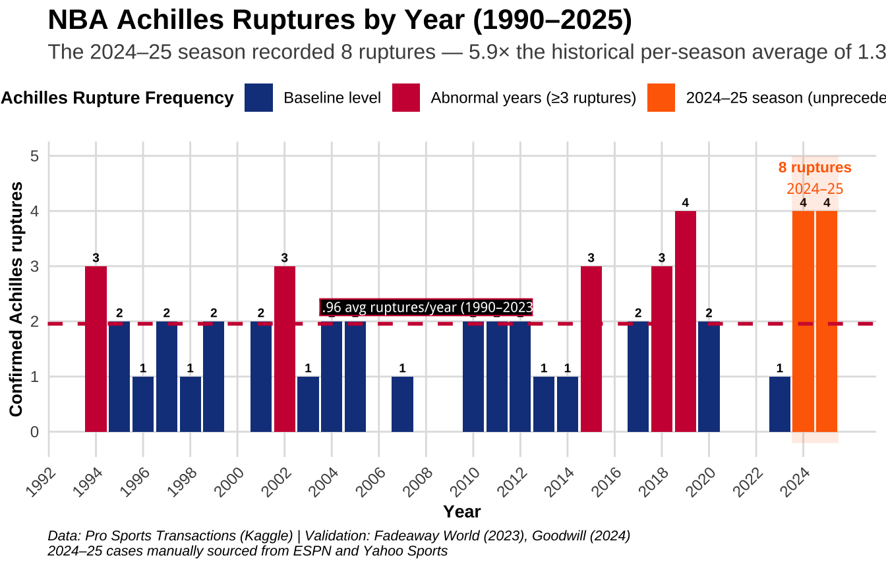
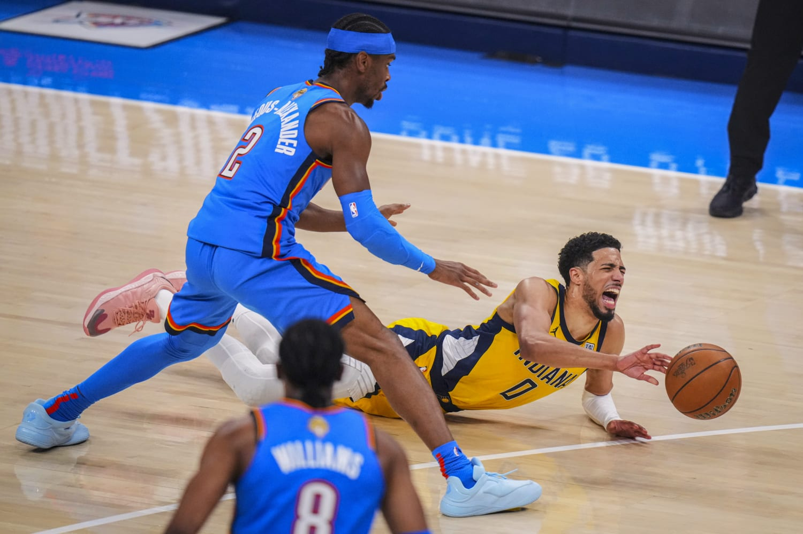
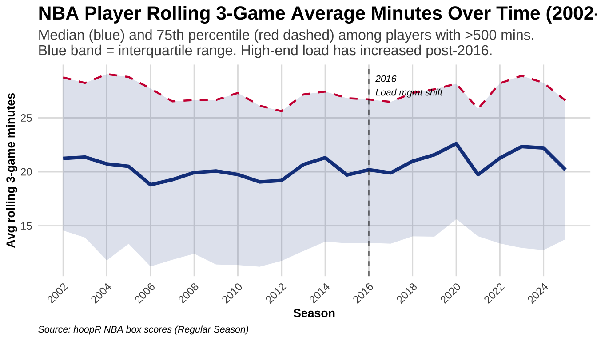

NBA (Achilles) Load Management Study
A Causal and Predictive Analysis of Player Injury Burden
Certified Data Analyst (R) Specialist CAPSTONE 2025 | Revised in April 2026
“Imagine if stars like Tatum, Haliburton, and KD could have avoided those injuries. No more ‘in the perfect world’ or ‘in another world’ — no more what-ifs. This project turns what-ifs into actionable foresight.”
Keziah Vickraman
The Problem | Reason for this project
The 2024–25 NBA season recorded 8 confirmed Achilles ruptures — nearly 6× the historical average of 1.36 per season. Commissioner Adam Silver convened an expert panel, citing workload intensity and scheduling as primary concerns. The question this project asks is simple: could we have seen this coming?

What DID this project tackle?
This study approaches the problem from two complementary angles. B-hat and Y-hat worlds colliding.
Part 1 — DID Load Kill the Achilles? | Causal Inference (B-Hat)
Causal inference using a Difference-in-Differences design on confirmed rupture cases (1990–2025). A 2016 policy cutoff and load × B2B interaction terms estimate whether high workload caused the spike — or merely correlates with it.
Part 2 — Who’s Next? | Machine Learning (Y-Hat)
Supervised Machine Learning using XGBoost regression on pct_games_missed — a continuous target built entirely from box score data — with a temporal train/test split (2018–2021 train, 2022–2025 test) that honestly simulates deployment.
NoteThe thread connecting both parts
The same load features — rolling 3-game average minutes, back-to-back games, days of rest — explain the population-level spike in Part 1 and power the individual risk scores in Part 2. Load is the mechanism; the model is the lens.
Key Results
Part 1 | Findings
High-load player-seasons show a positive and amplified rupture rate post-2016, especially in back-to-back contexts. Load management protected the stars — but median player loads increased. Rotation players outside formal rest protocols are the most exposed group.
Recommendation: Load management cannot be a privilege reserved for max-contract stars. Extend rest protocols across full rosters — especially rotation players who carry high minutes without the protection of formal rest agreements. One back-to-back too many is not bad luck. It is a preventable decision.
Part 2 | Findings
R² = 0.747 on held-out 2022–2025 data. Top predictors: prior absence rate, rolling minutes, career tenure. Luka Dončić was flagged Moderate Risk from his 2024 load profile — he subsequently missed 22% of the 2025–26 season with a Grade 2 hamstring strain.
Recommendation: Run this model before each season. Treat a 30%+ prediction as a roster problem, not just a medical one. Don’t bench your player based on vibes. Instead, “bench the instinct”, trust the data and get your signals amidst the noise.
ImportantThe bottom line
$4M average cost per rupture. Up to $70M for a max-contract star. The gap between intention and action in injury prevention is not a data problem. It is a tools problem. This project is one step toward closing it.
Key Findings

The Data
| Source | Coverage | Used for |
|---|---|---|
| hoopR (NBA box scores) | 2002–2025 | Game-level features, pct_games_missed (Part 2) |
| Pro Sports Transactions | 1990–2023 | Confirmed Achilles ruptures (Part 1 DiD) |
| ESPN injury log | 2024–25 season | Recent rupture cases + injury flags |
| Manual curation | 2024–25 season | 8 confirmed 2024–25 Achilles ruptures |
Reproducibility
All code is fully reproducible. Run in this order:
Code
source("00_Data_Setup.R") # 1. Shared data foundation
source("Part1_Causal_DiD.R") # 2. Causal analysis
source("Part2_Predictive_Hurdle.R") # 3. Predictive model
shiny::runApp("Capstone_Shiny.R") # 4. Interactive dashboard
TipRender this website locally
quarto render # renders all pages into /docs
quarto preview # live preview with hot reload
quarto publish gh-pages # deploy to GitHub Pages